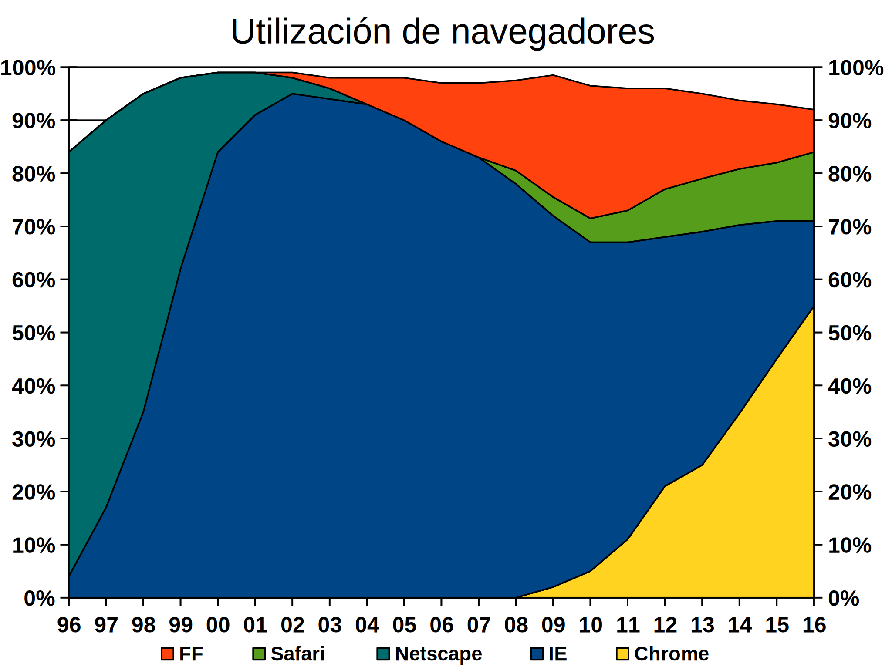
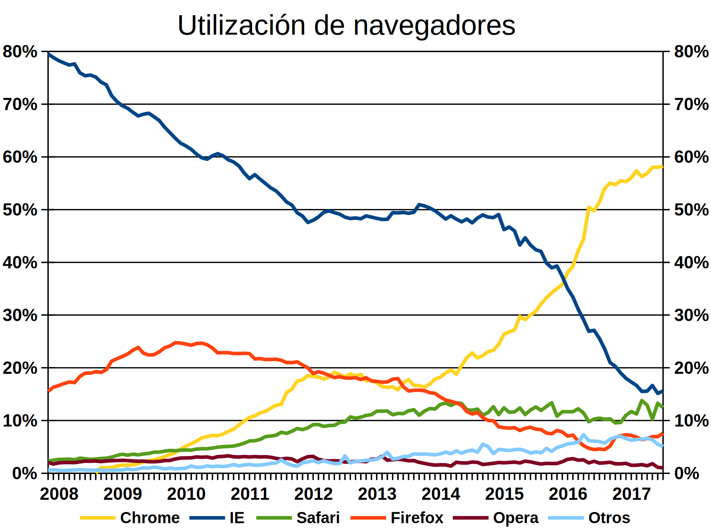
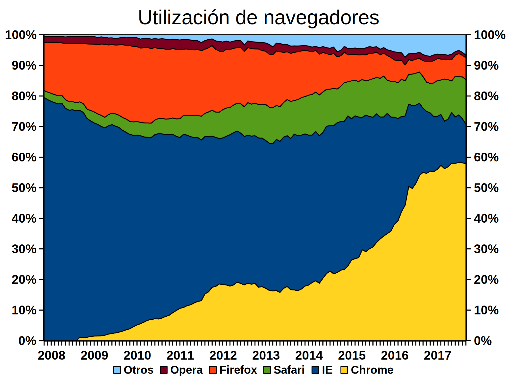
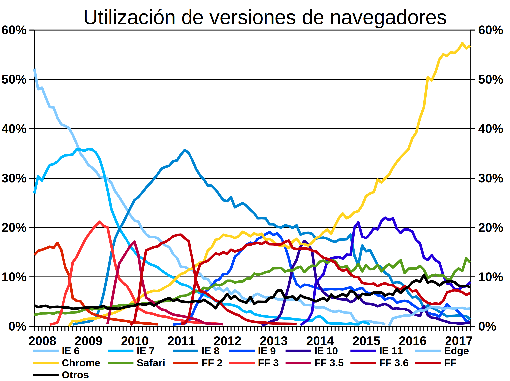
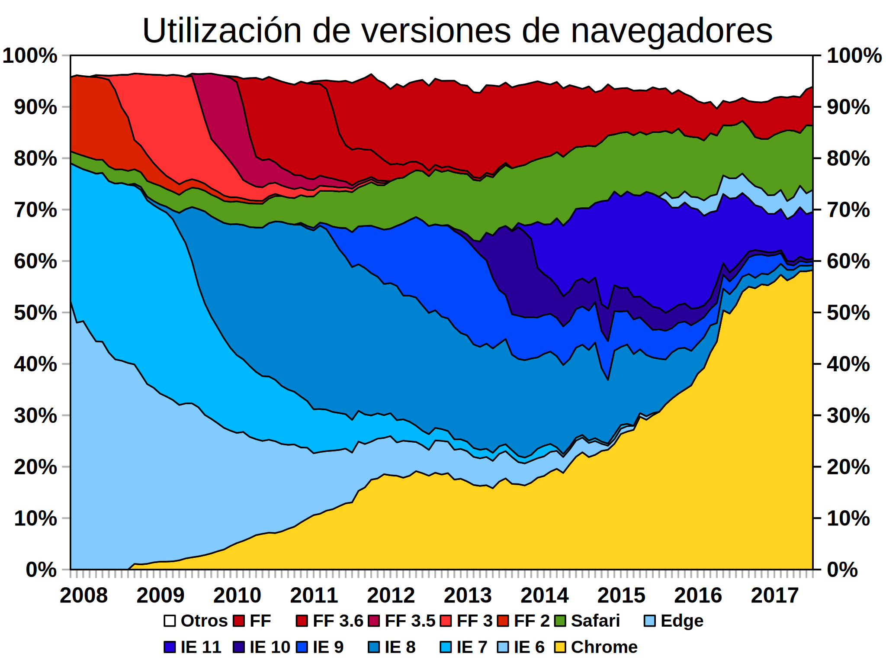

En esta lección se tratan los temas siguientes:
Los navegadores de Internet son el programa que permite acceder a la web. Desde su aparición en 1991, los navegadores han evolucionado considerablemente, a la vez que la propia web.
Para muchos usuarios y durante muchos años, decir navegador web ha sido decir Internet Explorer de Microsoft. Internet Explorer ha sido durante muchos años el navegador más utilizado con mucha diferencia, aunque no lo fue al principio, ni lo será en un futuro próximo.
Aunque por la naturaleza descentralizada de la web es difícil obtener estadísticas exactas de utilización de los navegadores y cualquier dato procede de fuentes parciales, existen fuentes de información que ofrecen estadísticas que pueden analizarse. En esta lección el primer gráfico se ha obtenido de la wikipedia (artículo Navegador web) y los siguientes son de elaboración propia a partir de los datos de la empresa Net Applications).
Mosaic, creado por el Centro Nacional de Aplicaciones de Supercomputación (Universidad de Illinois, EE.UU.) fue el primer navegador que popularizó el uso de la web. Cuando se publicó la primera versión, en 1993, el acceso a Internet todavía estaba limitado a Universidades y organismos gubernamentales. Cuando en 1994, el acceso a Internet se abrió a particulares, el jefe del proyecto y otros miembros del equipo se salieron de la Universidad para crear Netscape. A partir de ese momento, aunque se publicaron nuevas versiones en 1995 y 1997, Mosaic dejó de ser importante. En 1997 el desarrollo de Mosaic se dio por terminado.
Netscape apareció en 1994 y hasta 1997 fue el navegador más popular, por varios motivos:
A partir de 1996, en que Windows incluyó un navegador (Internet Explorer) en Windows 95 OSR2, la cuota de mercado de Netscape empezó a caer inexorablemente. En 1998, Netscape se rindió y antes de abandonar el mercado fundó la fundación sin ánimo de lucro Mozilla, para crear un navegador de software libre. En 1999 Netscape fue comprada por AOL (reconvertida ya en proveedor de Internet), que a su vez se fusionó con Time Warner en 2000. Aunque se siguieron publicando versiones de Netscape hasta 2008, desde el año 2000 Netscape es irrelevante.
Desde 2008, el desarrollo de Netscape se dio por terminado.
Microsoft presentó Internet Explorer en agosto de 1995, basándose en una versión de Mosaic. Internet Explorer 1 no estaba incluido en Windows 95, pero ante el éxito de Netscape y la creciente popularidad de la web, Microsoft pisó el acelerador:
A partir del año 2000, Internet Explorer dominó absolutamente el mercado y Microsoft pisó el freno:
A partir de 2005, ante la aparición de Firefox, Microsoft volvió a pisar el acelerador, aunque su uso global ha ido bajando desde entonces:
A partir de 2011, confirmado el éxito de Windows 7 como sustituto de Windows XP, Microsoft volvió a vincular el navegador con el sistema operativo e Internet Explorer 9 ya no se publicó para Windows XP. Para Windows XP, Microsoft promueve el uso de IE 8 e incluso creó en marzo de 2011 la web https://developer.microsoft.com/en-us/microsoft-edge/ie6countdown/ para promover la desaparición de IE6.
En septiembre/octubre de 2012 Microsoft publicó Internet Explorer 10, incluyéndolo en Windows Server 2012 y Windows 8, y la acompañó de una campaña publicitaria de tono humorístico en la web http://browseryoulovedtohate.com (el navegador que amabas odiar) que funcionó hasta enero de 2014 (se pueden ver todavía copias de la web en Internet Archive). En febrero de 2013 se publicó IE 10 para Windows 7.
En octubre de 2013 Microsoft publicó IE 11 incluyéndolo en Windows 8.1 y en noviembre de 2013 publicó la versión para Windows 7. En agosto de 2014, Microsoft anunció que a partir de enero de 2016 dejarán de publicarse actualizaciones de seguridad para IE 8.
En julio de 2015 Microsoft publicó Edge 12 incluyéndolo en Windows 10. No se trata sólo de un cambio de nombre, puesto que el motor de Edge es distinto al de Internet Explorer y abandona tecnologías propias de IE para adoptar tecnologáis compartidas con el resto de navegadores. Por desgracia, la negativa a publicar una versión de Edge para Windows anteriores a Windows 10 dificultará su expansión.
En cualquier caso, el año 2015 marca el inicio del final de Internet Explorer, el navegador más utilizado durante la mayor parte de la historia de la web. Dentro de unos años, será irrelevante.
Actualmente (septiembre de 2016), las versiones más modernas de IE que se pueden instalar en cada versión de Windows es la siguiente:
Edge blog: https://blogs.windows.com/msedgedev/. Antiguo IE blog: https://blogs.msdn.microsoft.com/ie/ . IE roadmap: https://developer.microsoft.com/en-us/microsoft-edge/platform/status/
Opera es un navegador que comenzó en 1994 como proyecto de investigación de Telenor, una compañía telefónica Noruega, pero que desde 1995 desarrolla la compañía Opera Software. La primera versión, Opera 2.1, se publicó en diciembre de 1996 y desde entonces ha ido publicando versiones tanto para PCs como para dispositivos móviles.
Su principal característica ha sido siempre el cumplimiento de las recomendaciones del W3C (no en vano Håkon Wium Lie, uno de los padres de las hojas de estilo, pertenece a esta compañía).
Hasta el año 2000 se trataba de un navegador de pago (con versión de prueba temporal), pero desde entonces es gratuito. Nunca ha tenido una gran cuota de mercado, salvo en dispositivos móviles, donde siempre ha sido bastante utilizado (aunque la competencia de Safari y Android están reduciendo esa importancia).
Desde la versión Opera 15 (julio de 2013) utiliza el motor de renderizado Blink, el motor de Google Chrome.
Opera blog: http://www.opera.com/blogs/news/
Mozilla era el apodo del navegador Netscape dentro de la misma empresa Netscape. En enero de 1998 Netscape anunció que liberaba el código fuente de su navegador y el proyecto de continuar el desarrollo de ese código recibió el nombre de Mozilla.
Tras unos comienzos titubeantes en los que hubo que desechar gran parte del código, a partir de 1999 se empezaron a publicar numerosas versiones (el lema era "release early, release often", es decir "publica pronto, publica a menudo") de la suite Mozilla, que incluía tanto el navegador como el cliente de correo electrónico, un programa de chat o un editor. Desde el primer momento, el objetivo era implementar fielmente las recomendaciones del W3C. En junio de 2002 se publicó por fin Mozilla 1.0.
Durante esos años, la financiación del proyecto provenía de AOL, que utilizaba Mozilla como base para las versiones de Netscape que siguieron publicándose durante unos años. Pero en mayo de 2003 AOL alcanzó un acuerdo con Microsoft para poner fin a las demandas por abuso de posición dominante. Microsoft pagó a AOL 750 millones de dólares y, a cambio, AOL pasó a utilizar Internet Explorer en vez de Netscape. AOL anunció entonces que dejaría de financiar el desarrollo de Mozilla.
Para poder continuar el desarrollo de Mozilla, se creó en 2004 la Mozilla Foundation, fundación sin ánimo de lucro, que recibe la mayor parte de sus ingresos de Google.
De 2002 a 2004 todavía se siguieron publicando numerosas versiones de Mozilla, pero se decidió separar (seguramente por influencia de Google, entre otros factores) los componentes de Mozilla y publicarlos como programas separados (el navegador Firefox, el cliente de correo electrónico Firebird, etc). Mozilla 1.7, la última versión de Mozilla, se publicó en junio de 2004 y Firefox 1.0, la primera versión de Firefox, se publicó en noviembre de 2004.
En 2005 el desarrollo de Mozilla se dio por terminado.
Posteriormente un grupo de programadores crearon SeaMonkey, un programa que incluye navegador, cliente de correo, cliente de chat, etc, como hacía Mozilla. SeaMonkey está basada en Firefox y Thunderbird y el proyecto, aunque no forma parte de la Fundación Mozilla, se aloja en sus servidores.
Firefox es el navegador creado por la Fundación Mozilla y es continuación del navegador Mozilla, que a su vez es continuación del navegador Netscape. Firefox 1.0 se publicó en noviembre de 2004 y su objetivo es permitir que la web sea pública, abierta y accesible.
Además de cumplir las recomendaciones del W3C (no solamente respecto al HTML y a CSS, sino también SVG o MathML), Firefox pone el énfasis en la usabilidad (pestañas, interface, etc), facilitando además la personalización y ampliación a través de extensiones.
El desarrollo de Firefox está financiado principalmente por Google, a través de donaciones a la Fundación Mozilla. A cambio, la página de inicio inicial de Firefox es la página web de Google. Cuando Google comenzó a publicar en 2008 su propio navegador (Chrome) surgieron dudas sobre la continuidad de esas donaciones, pero en agosto de 2008 el acuerdo se renovó hasta noviembre de 2011 y en diciembre de 2011 se renovó hasta noviembre de 2014.
Firefox fue el navegador que consiguió acabar con el dominio absoluto de Internet Explorer y permitió que renaciera la innovación en la web. A partir de 2005, Firefox se convirtió en el navegador alternativo a Internet Explorer y su uso creció hasta casi el 25% a principios de 2009. Sin embargo la aparición de Google Chrome por esas fechas detuvo su crecimiento y actualmente (septiembre de 2016) se ha reducido hasta el 5%.
Desde 2011 Firefox sufre también el crecimiento de las plataformas móviles en las que no tiene una presencia significativa (a diferencia de Apple y Google). El lanzamiento en 2013 de Firefox OS como sistema operativo para teléfonos móviles intentó recuperar el terreno perdido en ese terreno, pero la iniciativa fracasó y se abandonó en 2016.
Entre 2005 y 2011 Firefox publicó nuevas versiones más o menos una vez al año. Pero a partir de Firefox 5 (junio de 2011), Firefox tomó un modelo de desarrollo similar a Chrome y se publican nuevas versiones cada 6 semanas, para hacer llegar rápidamente a los usuarios las nuevas funcionalidades.
Este modelo de desarrollo rápido crea conflictos en los entornos empresariales, en los que se utiliza una misma versión de los programas durante mucho tiempo. La solución ofrecida fue crear una versión ESR (Extended Support Release), que se publica cada siete versiones de Firefox (7x6 = 42 semanas) y se mantiene durante un año (52 semanas). La primera versión ESR fue Firefox 10 (enero 2012) y la última es actualmente Firefox 45 (marzo de 2016). El tiempo dirá si este plazo, inferior a un año, es adecuado para los entornos empresariales.
Este modelo de desarrollo rápido también crea conflictos para los creadores de extensiones, ya que los cambios internos de cada versión pueden hacer que cualquier extensión deje de funcionar. Este problema se agravaba en las primeras versiones porque Firefox suponía que las extensiones eran incompatibles si no se habían actualizado, pero a partir de Firefox 10, Firefox supone que las extensiones son compatibles salvo que se indique lo contrario en la web de extensiones.
Mozilla blog: https://blog.mozilla.org/ - Firefox Platform Statu: https://platform-status.mozilla.org/
Hasta 2003 el sistema operativo Mac de Apple no disponía de su propio navegador web, sino que incluía Netscape o Internet Explorer, pero en junio de 2003 Apple publicó Safari 1.0 para Mac OS X. Safari utiliza el motor de renderizado WebKit, desarrollado por Apple a partir del motor de renderizado KHTML del proyecto de software libre KDE.
Desde 2003 Apple publica nuevas versiones de Safari cada año (en los últimos años en el mes de junio). Entre 2007 y 2012 se llegaron a publicar versiones de Safari para Windows, pero sin ningún éxito.
El crecimiento de los dispositivos móviles de Apple (iPhone desde 2007 y sobre todo iPad desde 2010) ha propulsado el uso de Safari.
Safari / WebKit blog: https://webkit.org/blog/ - Safari Platform Status: https://webkit.org/status/
Chrome es un navegador creado en 2008 por Google a partir de WebKit, el motor de renderizado del navegador Safari, aunque desde la versión 28 (julio de 2013) utiliza el motor Blink en vez de WebKit (artículo de lwn.net explicando los motivos de esta decisión). La versión 1.0 se publicó en diciembre de 2008. Su ritmo de desarrollo se aceleró en 2009 (2 versiones publicadas), 2010 (5 versiones publicadas) y 2011 (8 versiones publicadas) y desde 2011 se publica aproximadamente cada seis-siete semanas, como Firefox, aunque no se publica a intervalos regulares como sí hace Firefox.
Chrome ha destacado siempre por su interfaz minimalista y por la velocidad de ejecución del código Javascript, lo que obligó a Firefox y a Internet Explorer a ponerse las pilas en estos aspectos.
Chrome volvió a poner sobre la mesa el eterno debate entre la superioridad de las aplicaciones locales y remotas. Gracias a Chrome algunos ven técnicamente posible que el navegador se convierta en la única aplicación del ordenador, con todos los datos en Internet y las aplicaciones ejecutándose en HTML5 y Javascript. Otros recuerdan que más o menos esa fue ya la promesa de Java hace 15 años, que no se cumplió.
Desde 2011, el crecimiento de los dispositivos móviles con sistema operativo Android ha ayudado a Chrome a aumentar su cuota de mercado. A finales de 2013 la suma de todas las versiones de Chrome superó a la versión más utilizada de Internet Explorer (IE 11), pero desde entonces no ha dejado de crecer, superando a principios de 2016 el 50% del total del mercado de navegadores.
Desgraciadamente, la hegemonía de Google Chrome está volviendo a provocar los mismos problemas que provocó la hegemonía de Internet Explorer hace 15 años: los diseñadores están volviendo a crear páginas web preocupándose únicamente de que se vean correctamente en Google Chrome, sin tener en cuenta las recomendaciones del W3C. La diferencia es que Microsoft utilizó su predominio para detener el desarrollo de la web, mientras que Google no parece tener las mismas intenciones, pero el fin de la competencia nunca es una buena noticia para los usuarios.
Chromium blog: https://blog.chromium.org/ - Chrome Platform Status: https://www.chromestatus.com/features
Aunque los navegadores más utilizados no han sido nunca programas comerciales, el dominio del "mercado" de navegadores ha sido el objetivo de muchas empresas y organizaciones. Al principio de la historia de la web porque se pensaba que se podría hacer negocio vendiendo servidores web, más adelante porque al controlar el navegador se controla el HTML y las posibilidades de utilizar la web para distintas tareas.
El gráfico siguiente muestra el porcentaje de utilización de cada uno de los principales navegadores desde 1996 hasta 2016 (gráfico elaborado combinando datos de Net Applications, StatCounter y Wikimedia).

El gráfico permite dividir la historia en cinco fases, en la que se han ido alternando fases de hegemonía de un navegador con fases de caída de ese navegador y ascenso de otro:
Es importante señalar dos aspectos:
Los dos gráficos siguientes muestran los porcentajes de utilización de los navegadores desde finales de 2007 hasta la actualidad (basado en datos de la web Net Applications) de dos formas distintas: en forma de líneas o como áreas apiladas:
 
Estos gráficos muestran:
Los dos gráficos siguientes muestran los porcentajes de utilización de las diferentes versiones de Internet Explorer y Firefox desde finales de 2007 (basado en datos de la web Net Applications) de dos formas distintas: en forma de líneas o como áreas apiladas:
 
Estos gráficos muestran detalles interesantes:
La web vivió unos primeros años de desarrollo frenético gracias a la competencia entre Netscape e Internet Explorer. Los años de dominio absoluto de Internet Explorer fueron años de estancamiento de la web (desde el punto de vista técnico, no en cuanto a cantidad de contenidos). Afortunadamente, ese predominio se empezó a erosionar en 2004 con Firefox y desde 2009 hasta 2014, la competencia entre Firefox, Chrome e Internet Explorer provocó grandes mejoras en todos los navegadores e innovaciones técnicas que ya disfrutamos. Desde 2014, Google Chrome se ha convertido en el navegador dominante y no parece haber alcanzado todavía su techo.
También es importante tener en cuenta que hasta 2014 la competencia entre navegadores se producía entre usuarios de Windows, sistema operativo que dominaba de forma casi absoluta el mercado. El predominio de Windows daba a Internet Explorer una ventaja fundamental, ya que Internet Explorer viene incluido de serie en Windows y cada ordenador que se vende es un ordenador con Internet Explorer, salvo que el usuario tenga la voluntad y conocimientos para cambiar a otro navegador. Pero desde 2014, el crecimiento de los dispositivos móviles ha cambiado el terreno de juego. La plataforma mayoritaria en los dispositivos móviles es Android y su navegador nativo, Chrome, cuenta con ventaja.
Esperemos que en los próximos años el predominio de Chrome no signifique un estancamiento del mercado y que la competencia de Firefox, Internet Explorer y Safari obligue a Google a seguir mejorando y a respetar las recomendaciones del W3C. Todos nosotros saldremos ganando si la web sigue siendo ese campo de juego neutral que soñó Berners Lee hace 25 años.